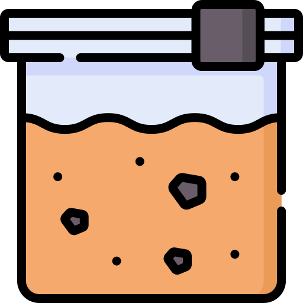

<p-dialog [modal]="true" [(visible)]="visible" [style]="{ width: '40rem' }">
  <ng-template pTemplate="header">
    <div class="inline-flex align-items-center justify-content-center gap-2">
      <div class="d-flex align-items-center">
        
        <span class="fw-bold header-text ms-3"> {{ title }} </span>
      </div>
    </div>
  </ng-template>
  <form [formGroup]="soilForm" (ngSubmit)="onSubmit()">
    <span class="p-text-secondary d-block mb-5"
      >Digite os parâmetros do novo tipo de solo.</span
    >
    <div class="d-flex align-items-center justify-content-between gap-3 mb-3">
      <label for="soil-name" class="fw-semibold">Nome do Solo</label>
      <input
        [formControl]="soilForm.controls.name"
        pInputText
        id="soil-name"
        class="flex-auto"
        autocomplete="off"
      />
    </div>

    <div class="d-flex align-items-center justify-content-between gap-3 mb-3">
      <label for="soil-cc" class="fw-semibold"
        >Capacidade de Campo (cm³/cm³)</label
      >
      <p-inputNumber
        [formControl]="soilForm.controls.cc"
        inputId="soil-cc"
        mode="decimal"
        [minFractionDigits]="2"
        [maxFractionDigits]="2"
      />
    </div>
    <div class="d-flex align-items-center justify-content-between gap-3 mb-3">
      <label for="soil-pmp" class="fw-semibold"
        >Ponto de Murcha Permanente (cm³/cm³)</label
      >
      <p-inputNumber
        [formControl]="soilForm.controls.pmp"
        inputId="soil-pmp"
        mode="decimal"
        [minFractionDigits]="2"
        [maxFractionDigits]="2"
      />
    </div>
    <div class="d-flex align-items-center justify-content-between gap-3 mb-3">
      <label for="soil-density" class="fw-semibold"
        >Densidade do Solo (g/cm³)</label
      >
      <p-inputNumber
        [formControl]="soilForm.controls.density"
        inputId="soil-density"
        mode="decimal"
        [minFractionDigits]="2"
        [maxFractionDigits]="2"
      />
    </div>
    <div class="d-flex justify-content-end gap-2">
      <p-button
        label="Cancelar"
        severity="secondary"
        (click)="visible = false"
      />
      <p-button type="submit" label="Salvar" [disabled]="!soilForm.valid" />
    </div>
  </form>
</p-dialog>
